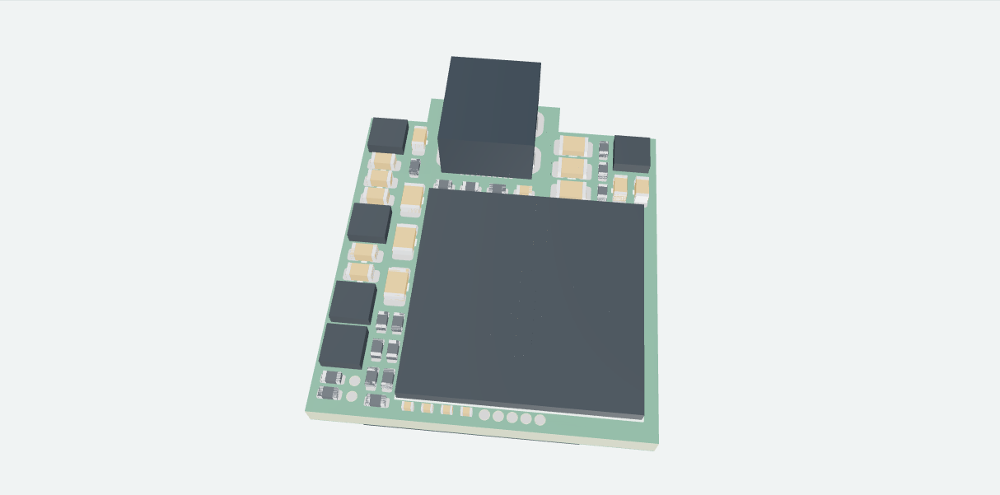

V6 · 1 NOVEMBER 2026
Frontend FPGA Board
Artix-7 frontend with Micro-HDMI, mezzanine interfaces and 5 V input conversion. Unrouted placement study; package selection, regulator layout, timing and power integrity remain under review.
Inspect board →Download full KiCad ↓